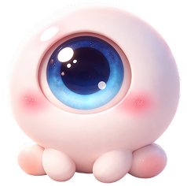

눈 뜨임 비율◉
왼쪽
0.32
오른쪽
0.31
추적 시간: 0시간 00분 경과
권장 범위: 15-20회
눈 피로 위험 신호가 높아졌어요

깜빡임 빈도가 조금 떨어지고 있어요. 짧은 휴식을 곧 준비하는 편이 좋습니다.
화면 사용 중 쌓인 눈 피로를 낮추는 짧은 회복 루틴입니다.
20분 이상 연속으로 화면을 본 뒤 휴식 신호를 보냅니다.
약 6m 이상 떨어진 물체로 초점을 이동하도록 안내합니다.
20초 동안 먼 곳에 초점을 유지해 눈 주변 긴장을 낮춥니다.
20초 초점 이동 루틴을 시작합니다.
의식적인 깜빡임은 눈물막을 보충하고 장시간 화면 사용 중 건조감을 낮춥니다.
모니터 밝기와 주변 조명의 차이를 줄이면 눈부심과 조절 부담을 줄일 수 있습니다.
오늘의 피로 신호와 개입 이력을 확인합니다.
점심 이후 깜빡임 빈도가 평균 18% 낮아졌습니다.
20초 루틴 이후 컨디션 점수가 평균 8점 상승했습니다.
집중 작업 구간에서 눈 감김 폭이 얕아지는 패턴이 보입니다.
EAR · 깜빡임 패턴 · PERCLOS 세부 수치와 피로도 추이를 실시간으로 확인합니다.
개입 강도와 알림 방식을 조정합니다.
측정 세션과 피로도 판정의 민감도를 조정합니다.
작업 흐름을 방해하지 않는 선에서 개입 방식을 정합니다.